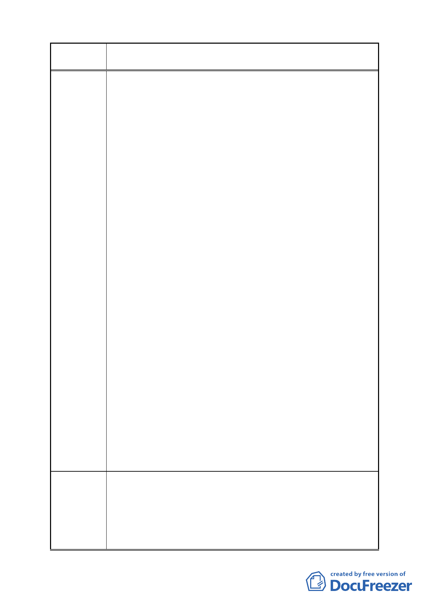

案 名 變更臺北市南港區鐵路地下化沿線土地主要計畫案
建議辦法
所也要徵收；為此，當地居民感到非但沒有受到政府的照
顧，反而是遭受逼迫。
3.向陽路 84 號至 110 號是一個完整區塊的土地，將來必有其
發展的空間。
4.發展南港的首要原則為「讓更多的居民及商家湧入南港」，
所以將 C 區變更為住商混合區比公園用地更為恰當。
5.若建商來投資，住戶能得到更優渥的補償，政府也不需要支
付拆遷補償費。
6.況且政府所能提供的拆遷補償費太少，如此將導致居民無法
在南港購屋，流離失所。
7.南港可使用的土地極其有限，不應當浪費寶貴的土地，將其
規劃「低度利用」的公園及北部流行音樂中心，更何況南港
已有大型的南港公園可用。
8.各社區可興建小型公園；因為忙碌的現代人會優先選擇社區
內的小型公園休憩。
9.大型公園容易聚集遊民，且易成為犯罪的場所、治安的死
角，若設在玉成國小及南港高中的對面，易造成學生安全上
的隱憂。
10.「北部流行音樂中心」辦演唱會時所帶來的人潮，可在 C
區的住商混合區消費。
11.若「北部流行音樂中心」不能天天舉辦音樂表演，那將會
成為低度利用的建設，如此，既無法帶來大量人潮、也無法
製造巨大商機，更不能帶動南港發展，甚至可能使南港更加
荒涼，缺乏人氣。
12.絕對不能犧牲當地住戶僅有的權益，以「高度利用」地區
來換取一個「低度利用」的案子。
13.若政府有多餘的經費，「北部流行音樂中心」可座落於 202
兵工廠用地，或台北市其他腹地較大的地區；此案原本立意
雖好，但恐有令人遺憾之處，煩請三思而行。
14.基於上述，政府可以省下一筆鉅款，真正花用在南港居民
的身上。如：減免工業區轉為商業區之 45%的回饋。
1.敬請將 C 區內向陽路 84 號至 110 號建物及土地剔除，不納
入重劃範圍內。
2.敬請將 C 區變更為住商混合區（向陽路 84 號至 110 號建物
及土地除外）。
3.敬請市府於 C 區不興建大型公園作為「北部流行音樂中心」
之發展腹地；而以住商混合區作為「北部流行音樂中心」之
- 48 -